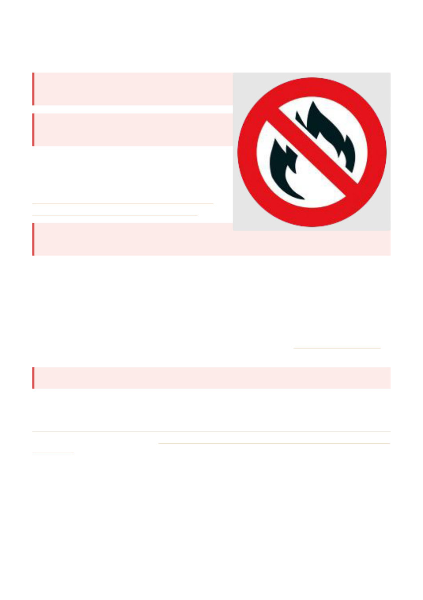

GENERAL BEEKEEPING
Total Fire Ban Days: use of smokers
If you want to inspect your hives and use your smoker
over summer, PLAN AHEAD!!!!!
You are NOT permitted to light / use a smoker on a
total fire ban day.
Anyone who breaches a Total Fire Ban declaration is sub‐
ject to heavy legal penalties including large fines and even
imprisonment.
https://www.cfa.vic.gov.au/warnings‐restrictions/total‐
fire‐bans‐fire‐danger‐ratings/about‐total‐fire‐bans
Summer - If you want to inspect your hives and use
your smoker over summer, PLAN AHEAD!!!!!
CFA declares the Fire Danger Period for each municipality (shire or council) at different times in the lead up
to the fire season. It depends on the amount of rain, grassland curing rate and other local conditions.
The Fire Danger Period may be declared as early as October in some municipalities, and typically remains in
place until the fire danger lessens, which could be as late as May.
The Fire Danger Period is NOT the same thing as a Total Fire Ban.
Your local council or shire may have their own local laws about lighting fires. Contact your local council to
find out what municipal local laws may be in place. Local laws may be in place all year.
You are NOT permitted to light/use a smoker on a total fire ban day.
Anyone who breaches a Total Fire Ban declaration is subject to heavy legal penalties including large fines and
even imprisonment.
Source: the Geelong Beekeepers Club website, geelongbeekeepersclub.org.au › Resources › General Beekeeping › Total Fire Ban Days ‐
Geelong Beekeepers Club ∙ General Beekeeping
38